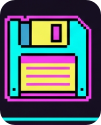
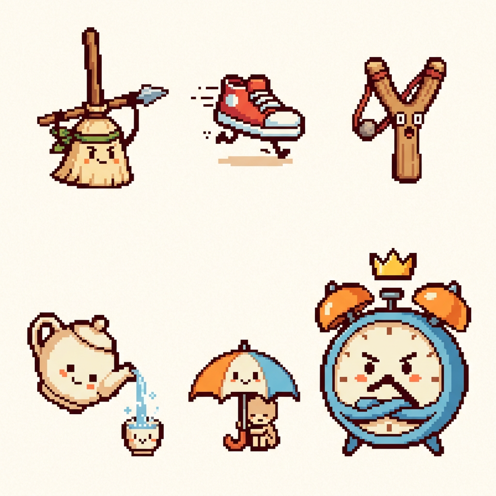

一句话定调：把扫帚、运动鞋、弹弓、茶壶、雨伞和闹钟变成会打架的小伙伴。小朋友不看说明也能凭外形猜出“谁跑得快、谁能保护、谁会远程攻击”；温暖的浅色棋盘和大图标让玩法先于世界观被看懂。
AI 出图统一补充：friendly everyday objects as cute characters, flat 2D pixel art, warm cream background, warm brown pixel outline, sky blue orange leaf green accents, exaggerated readable actions, no jargon, no computer UI, no 3D, no perspective, no text。

Assets/玩法拓展/美术概念图/风格基准_软盘图标_保留.png| 规范 | 设定 |
|---|---|
| 像素单位 | 原生绘制 32×32；放大只允许整数倍 2x / 3x / 4x，禁止平滑缩放。 |
| 轮廓 | 暖棕色 1~2px 像素描边；小尺寸下轮廓不能断。 |
| 高光 | 只用 1 个主高光色；高光是方块、横线或角点，不用软笔刷。 |
| 装饰 | 最多一个夸张表情和一个职业道具；禁止满屏碎细节。 |
| 背景 | 奶油白 / 淡木色平面；概念图和 Sprite 不出现 3D 地面、透视房间、体积光。 |
| 兵种 | 视觉原型 | 看图就懂的动作 | 主色 |
|---|---|---|---|
| 近战 / 兵 | 小扫帚 | 向前挥扫，贴近敌人打 | 活力橙 |
| 刺客 / 马 | 跑鞋 | 迈大步、留短短的脚印 | 天空蓝 |
| 弓箭 / 车 | 玩具弹弓 | 拉开皮筋，隔远弹出小弹丸 | 橙 + 蓝 |
| 法师 / 炮 | 小茶壶 | 隔着别的棋子喷出一串水花 | 天空蓝 |
| 牧师 / 士象 | 小雨伞 | 撑开罩住同伴，表示保护 / 治疗 | 叶绿 |
| Boss / 将 | 赖床大闹钟 | 摇晃敲铃、戴皇冠，显眼又好笑 | 危险红 |
升星保留同一物件的轮廓：1★ 小扫帚 → 2★ 带围裙的扫帚 → 3★ 2×2 大扫帚；不要换成另一个物件。此表是首批方向，其余角色也应优先从熟悉的生活用品扩展。
| 玩法状态 | 像素表现 | 玩家看到的含义 |
|---|---|---|
| 连 | 同伴牵手，之间连一段暖黄色短线 | 在一起，更强 |
| 断 | 独自站着，脚下红色裂纹 | 落单，容易受伤 |
| 围困 | 变灰，被简单绳圈套住 | 被困住，不能动 |
| 眼 | 空位上小小的暖黄色安全屋图标 | 安全的位置 |
| 叫吃 | 红色闪烁感叹号 | 快要被困 |
| 决死加速 | 闹钟响铃 + 红色倒计时 | 赶紧分胜负 |
当前参考：下图是新方向的角色探索稿，仅供确定原型和情绪，不能直接切为 Sprite；须按 32×32 原生规格手工重绘。其余旧图均为已放弃的科技主题历史探索，不作为制作输入。

| 文件 | 用途 |
|---|---|
concept_everyday_characters.png | 当前生活化角色与 Boss 方向；只看轮廓与表情，不照搬像素尺寸 |
概念图_01～13_*.png | 历史探索，全部停用，不要继续作为新资源参考 |
正向提示词：
friendly casual game character based on one familiar everyday household object, clear action that shows its role, cute expressive face, flat front-facing 2D pixel art, warm cream background, warm brown outline, sky blue orange leaf green accents, crisp chunky pixels, single readable silhouette, ample space between characters负向提示词：
computer interface, router, server, circuit, code, technical jargon, 3D render, realistic materials, perspective, isometric, cinematic lighting, detailed background, smooth gradient, text, logo, watermark, slimeAI 图仅用于方向探索；正式 Sprite 需重新绘制到原生 32×32 / 64×64 / 96×96，并保持序列帧同轮廓、同锚点。
| 检查项 | 合格标准 |
|---|---|
| 是否纯 2D | 没有 3D 渲染、透视、体积场景或摄影式光照。 |
| 是否熟悉 | 不读名字也能认出“扫帚 / 鞋子 / 雨伞”等物件。 |
| 动作是否直白 | 至少能通过姿势猜到跑、打、保护或治疗中的一种。 |
| 缩小后是否可读 | 缩到 32×32 后仍能认出主体轮廓和阵营色；至少邀请 3 位非游戏开发者盲测。 |
| 是否能做 Sprite | 正式资源需透明背景、干净边缘、统一锚点；概念图不能直接用。 |